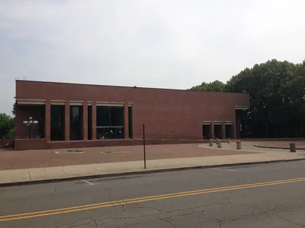

Buildings 132
Sort
 Beinecke Rare Book & Manuscript Library1963 · New Haven
Beinecke Rare Book & Manuscript Library1963 · New Haven Library and Learning Center, Vienna University of Economics2013 · Vienna
Library and Learning Center, Vienna University of Economics2013 · Vienna Helsinki Central Library Oodi2018 · Helsinki
Helsinki Central Library Oodi2018 · Helsinki State Library of Queensland2006 · Brisbane
State Library of Queensland2006 · Brisbane Toronto Reference Library1977 · Toronto
Toronto Reference Library1977 · Toronto Bibliothèque Sainte-Geneviève1850 · Paris
Bibliothèque Sainte-Geneviève1850 · Paris State Library Victoria1913 · Melbourne
State Library Victoria1913 · Melbourne Radcliffe Camera1748 · Oxford
Radcliffe Camera1748 · Oxford Boekentoren1942 · Ghent
Boekentoren1942 · Ghent National Library of Kosovo1982 · Pristina
National Library of Kosovo1982 · Pristina De Krook2017 · Ghent
De Krook2017 · Ghent Atlanta Central Library1980 · Atlanta
Atlanta Central Library1980 · Atlanta Kitakyushu Central Library1975 · Kitakyushu
Kitakyushu Central Library1975 · Kitakyushu Central Library (UNAM)1956 · Mexico City
Central Library (UNAM)1956 · Mexico City Stockholm Public Library1928 · Stockholm
Stockholm Public Library1928 · Stockholm Calgary Central Library2018 · Calgary
Calgary Central Library2018 · Calgary National Library of Argentina1992 · Buenos Aires
National Library of Argentina1992 · Buenos Aires Biblioteca Luis Ángel Arango1958 · Bogotá
Biblioteca Luis Ángel Arango1958 · Bogotá Boston Public Library, McKim Building1895 · Boston
Boston Public Library, McKim Building1895 · Boston Lyndon Baines Johnson Library and Museum1971 · Austin
Lyndon Baines Johnson Library and Museum1971 · Austin Thomas Crane Public Library1881 · Quincy
Thomas Crane Public Library1881 · Quincy Berlin State Library (Haus Potsdamer Straße)1978 · Berlin
Berlin State Library (Haus Potsdamer Straße)1978 · Berlin Robarts Library1973 · Toronto
Robarts Library1973 · Toronto Rovaniemi Library1968 · Rovaniemi
Rovaniemi Library1968 · Rovaniemi Metso Library1986 · Tampere
Metso Library1986 · Tampere Viipuri Library1935 · Vyborg
Viipuri Library1935 · Vyborg Vasconcelos Library2006 · Mexico City
Vasconcelos Library2006 · Mexico City Library of Birmingham2013 · Birmingham
Library of Birmingham2013 · Birmingham Sant Antoni-Joan Oliver Library2007 · Barcelona
Sant Antoni-Joan Oliver Library2007 · Barcelona The Morgan Library & Museum1906 · New York
The Morgan Library & Museum1906 · New York Weston Library1940 · Oxford
Weston Library1940 · Oxford Biblioteca Gabriel García Márquez2022 · Barcelona
Biblioteca Gabriel García Márquez2022 · Barcelona W. E. B. Du Bois Library1974 · Amherst
W. E. B. Du Bois Library1974 · Amherst LocHal2019 · Tilburg
LocHal2019 · Tilburg IKMZ Library, BTU Cottbus2004 · Cottbus
IKMZ Library, BTU Cottbus2004 · Cottbus Dokk12015 · Aarhus
Dokk12015 · Aarhus Geisel Library1970 · San Diego
Geisel Library1970 · San Diego Bibliotheca Alexandrina2002 · Alexandria
Bibliotheca Alexandrina2002 · Alexandria Virgilio Barco Library2001 · Bogotá
Virgilio Barco Library2001 · Bogotá Tūranga (Christchurch Central Library)2018 · Christchurch
Tūranga (Christchurch Central Library)2018 · Christchurch Jacob and Wilhelm Grimm Centre2009 · Berlin
Jacob and Wilhelm Grimm Centre2009 · Berlin Ames Free Library1883 · Easton
Ames Free Library1883 · Easton British Library1997 · London
British Library1997 · London Martin Luther King Jr. Memorial Library1972 · Washington
Martin Luther King Jr. Memorial Library1972 · Washington Billings Memorial Library1883 · Burlington
Billings Memorial Library1883 · Burlington
Cleo Rogers Memorial Library1969 · Columbus